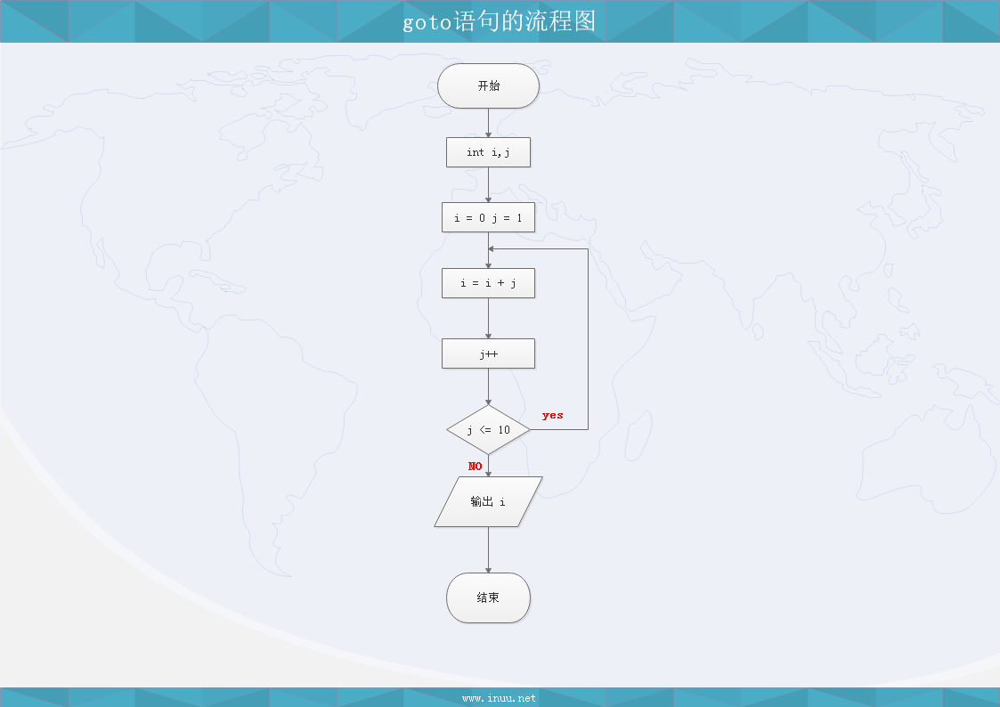
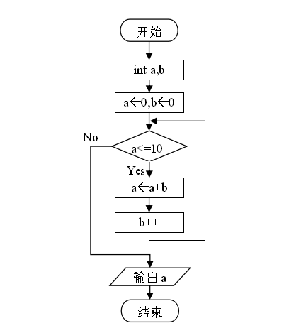
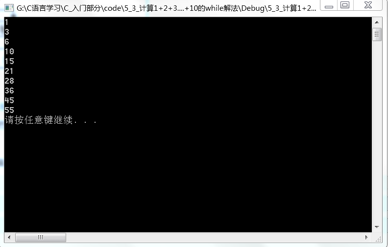
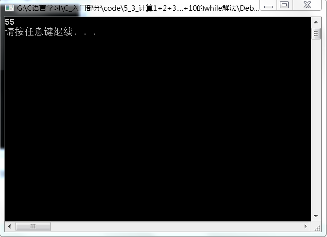

今天更新一个C语言的循环，简单点就是就是我们平时在使用电脑时不停的刷新网页，生活中每天都要吃饭等等就是循环，而编程中也有不断循环的过程，或者遇到符合的条件结束循环
下面进入今天的主题：
需求：用计算机计算从1加到10的和
一种笨方法：
解题思路：
1、定义2个变量：计数器，总和，并初始化为0
2、计数器加1（1）
3、总和=总和+计数器
4、计数器加1（2）
5、总和=总和+计数器
6、……
7、计数器加1（10）
8、总和=总和+计数器
9、输出总和55
程序1
计算1+2+3+…+9+10
// 5_1_计算1+2+3+....10的和，输出在屏幕上
#include <stdio.h>
main()
{
int i, j; //i 是累加器， j是计数器
i = 0;
j = 1;
i = i + j; // i = 0 + 1
j++;
i = i + j; // i = 1 + 2
j++;
i = i + j;
j++;
i = i + j;
j++;
i = i + j;
j++;
i = i + j;
j++;
i = i + j;
j++;
i = i + j;
j++;
i = i + j;
j++;
i = i + j;
j++;
printf("%d\n", i);
system("pause");
}※累加器一般初始化为0，请同学们想想累乘器可否初始化为0？ NO 初始值应该为 1 零乘以任何数都得零！
goto语句
格式：
goto 标号;
标号格式：
标识符：语句;
规律：goto语句通常配合if语句使用，否则容易构成死循环
程序2
计算1+2+3+…+9+10的goto解法
//5_2_计算1+2+3+....+9+10的goto解法，结果输出在屏幕上面
#include <stdio.h>
#include <stdlib.h>
main()
{
int i, j; //i 是累加器，j 是计数器
i = 0;
j = 1;
mark: // goto 语句用的标记
i = i + j;
j++; //如果没有这一行程序就会进入死循环
if (j <= 10) goto mark;
printf("%d\n", i);
system("pause");
}下面是goto流程图:

while语句
格式：
while(条件表达式)
{
若干语句
…
}
程序3
计算1+2+3+…+99+10的while解法
// 5_3_计算1+2+3+.....+10的while解法
#include <stdio.h>
main()
{
int i, j; // i 是累加器 j 是计数器
i = 0;
j = 1;
while (j <= 10)
{
i = i + j;
j++;
}
printf("%d\n", i);
system("pause");
}
上面的代码中：
printf放在循环体内和外的差别
在循环里面的执行结果是把每一步都会打印出 i 的结果。打印10次

在循环外面的执行结果是直接打印出 i 最后的结果。打印1次

do while语句
格式：
do
{
若干语句
…
} while(条件表达式);
程序4
打印出0到2018年之间所有的闰年
//5_4_打印出0到2018年所有的闰年
#include <stdio.h>
main()
{
int year = 0;
do
{
// 4年一闰，100年不闰，400年又闰
if (year % 4 == 0 && year % 100 != 0 || year % 400 == 0)
printf("%d\t", year);
year++;
} while (year<=2018);
system("pause");
}※所有的循环语句都是条件满足才执行循环体
※do while语句至少会执行一次循环体，while则有可能一次都不执行。
作业
1、写出计算1+2+3+…+99+100的do while解法。
//5_5_计算1+2+3+....10的 do while解法
#include <stdio.h>
main()
{
int i, j; //i 是累加器 j是计数器
i = 0;
j = 1;
do
{
i = i + j;
j++;
} while (j <= 10);
printf("%d\n", i);
system("pause");
}
2、求10! （求10的阶乘）
//5_6_计算10的阶乘
#include <stdio.h>
main()
{
int a = 1, s = 1;
do
{
s = s*a;
a++;
} while (a<=10);
printf("%d\n", s); //结果是：3628800
system("pause");
}
最后分享一首古诗给大家！
《冬夜读书示子聿》
陆游
古人学问无遗力
少壮工夫老始成
纸上得来终觉浅
绝知此事要躬行